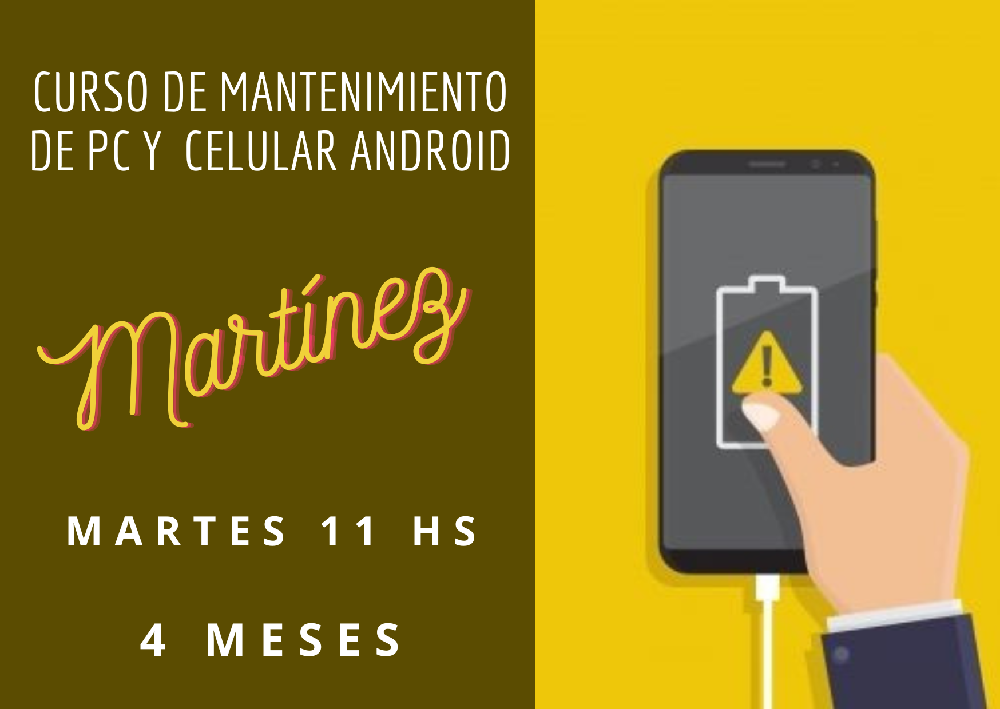
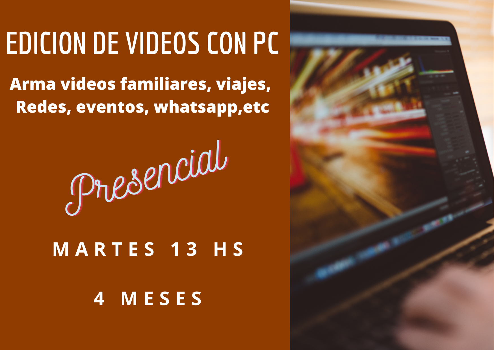
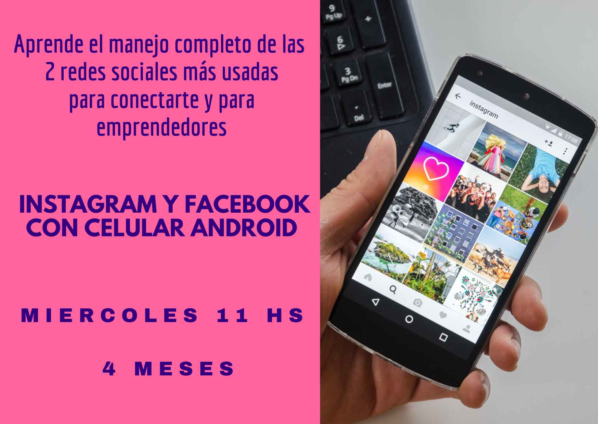
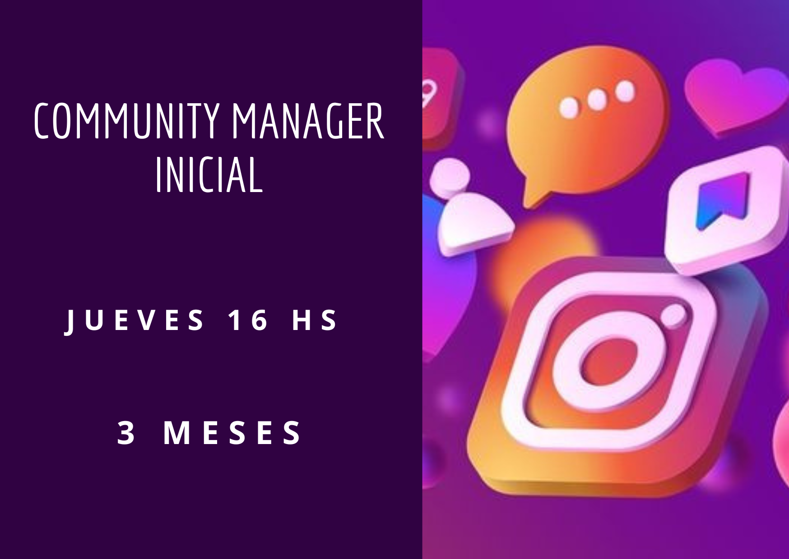

Este curso está diseñado especialmente para aquellos que son nuevos en el mundo de los teléfonos Android
y desean aprender a utilizar todas sus funciones básicas de manera efectiva. A lo largo de este curso,
los participantes adquirirán las habilidades necesarias para sacar el máximo provecho de sus dispositivos Android,
centrándose en aplicaciones populares como WhatsApp, correo electrónico y más.
Requisitos:
No se requieren conocimientos previos. Los participantes deben traer su propio dispositivo Android y
tener acceso a una conexión a Internet.

Este curso está diseñado para aquellos que ya tienen experiencia en el manejo de celulares y/o computadoras,
ya sea a través de haber completado el "Nivel 1: Curso de Manejo de Celulares" o el "Nivel 1: Curso de Internet",
o por tener un conocimiento básico en estas áreas. En este curso, los participantes darán un paso más allá,
adquiriendo habilidades esenciales en el mantenimiento y solución de problemas tanto en dispositivos móviles como en computadoras.
Este curso está diseñado para aquellos que ya tienen experiencia en el manejo de celulares y/o computadoras,
ya sea a través de haber completado el "Nivel 1: Curso de Manejo de Celulares" o el "Nivel 1: Curso de Internet",
o por tener un conocimiento básico en estas áreas. En este curso, los participantes darán un paso más allá,
adquiriendo habilidades esenciales en el mantenimiento y solución de problemas tanto en dispositivos móviles como en computadoras.
Requisitos:
Haber completado el "Nivel 1: Curso de Manejo de Celulares" o tener experiencia básica en el manejo de dispositivos móviles.
Haber completado el "Nivel 1: Curso de Internet" o tener experiencia básica en el uso de computadoras.
Traer dispositivos móviles y/o computadoras propias para prácticas en clase o usar las PC que estan en el salon de clases.

Este curso de Edición de Videos está diseñado para brindarte las habilidades necesarias para crear videos atractivos y de alta calidad destinados a una variedad de propósitos, incluyendo contenido para redes sociales, documentación de eventos, recuerdos familiares y videos de viajes.
A través de este curso, aprenderás a utilizar herramientas de edición de video en tu PC para transformar tus grabaciones
en piezas visuales memorables y cautivadoras con o sin animación.
Este curso de Edición de Videos está diseñado para brindarte las habilidades necesarias para crear videos atractivos y de alta calidad destinados a una variedad de propósitos, incluyendo contenido para redes sociales, documentación de eventos, recuerdos familiares y videos de viajes.
A través de este curso, aprenderás a utilizar herramientas de edición de video en tu PC para transformar tus grabaciones
en piezas visuales memorables y cautivadoras con o sin animación.
Requisitos:
No se requieren conocimientos previos en edición de videos, + no es necesario contar con una
computadora con software de edición de video instalado ya que se instalara en clase. Si es necesario hacer realizado el curso de
internet nivel 1 o el curso de office o sino saber lo basico del manejo de la PC.Se requiere traer pendrive.
El Curso de Internet Nivel 1 para Principiantes es el punto de partida ideal para quienes desean adentrarse
en el mundo de la tecnología y la navegación en línea sin conocimientos previos. Este curso ha sido
diseñado específicamente para brindar una sólida base en el uso de Internet, correo electrónico y
otras herramientas esenciales para la comunicación y la exploración en línea.
Requisitos:
No se requieren conocimientos previos. Solo manejo de mouse.

El Curso de Instagram y Facebook para Principiantes está diseñado para aquellos que desean dominar
por completo estas dos poderosas plataformas de redes sociales, ya sea con fines personales o profesionales.
Este curso te ayudará a aprovechar al máximo Instagram y Facebook para emprendimientos, mantenerse conectado
con familiares y amigos, o simplemente explorar las posibilidades que estas redes ofrecen.
El Curso de Instagram y Facebook para Principiantes está diseñado para aquellos que desean dominar
por completo estas dos poderosas plataformas de redes sociales, ya sea con fines personales o profesionales.
Este curso te ayudará a aprovechar al máximo Instagram y Facebook para emprendimientos, mantenerse conectado
con familiares y amigos, o simplemente explorar las posibilidades que estas redes ofrecen.
Requisitos:
Se recomienda haber completado el Curso de Manejo de Celulares Android o tener conocimientos básicos sobre
el uso de teléfonos móviles. Los participantes deben tener acceso a un dispositivo con conexión a Internet
y una cuenta activa de Instagram y Facebook (o estar dispuestos a crearlas).
El Curso de Microsoft Office Nivel 1 es la puerta de entrada al mundo de los software de
productividad más utilizadas en el entorno profesional y académico: Word, PowerPoint y Excel.
Diseñado tanto para aquellos que desean adquirir conocimientos desde cero como para quienes ya tienen un
entendimiento básico de las computadoras, este curso te proporcionará las habilidades
esenciales para crear documentos, presentaciones y hojas de cálculo efectivas.
Requisitos:
Se recomienda haber completado el Curso de Internet Nivel 1 o tener conocimientos básicos de manejo de una PC.
Los estudiantes deben tener acceso a una computadora con Microsoft Office instalado si la quieren traer o usar las PC que estan en el salon.

El Curso de Operador de PC es una formación completa diseñada para proporcionar a los participantes
las habilidades fundamentales necesarias para operar una computadora de manera eficiente y efectiva.
Este curso está diseñado tanto para principiantes que desean adentrarse en el mundo de la informática
como para aquellos que ya tienen conocimientos básicos pero desean mejorar sus habilidades.
Requisitos:
Se recomienda haber completado el Curso de Internet Nivel 1 o el Curso de Microsoft Office Nivel 1 o tener conocimientos
básicos de manejo de una PC. Los estudiantes deben tener acceso a una computadora
con un sistema operativo como Windows O usar las PC que estan en el salon.
Este curso está diseñado especialmente para aquellos que son nuevos en el mundo de los teléfonos Android
y desean aprender a utilizar todas sus funciones básicas de manera efectiva. A lo largo de este curso,
los participantes adquirirán las habilidades necesarias para sacar el máximo provecho de sus dispositivos Android,
centrándose en aplicaciones populares como WhatsApp, correo electrónico y más.
Requisitos:
No se requieren conocimientos previos. Los participantes deben traer su propio dispositivo Android y
tener acceso a una conexión a Internet.

El Curso de Community Manager Inicial es un curso diseñado para capacitar a los alumnos
en las habilidades y responsabilidades clave de un Community Manager. A lo largo de este curso, los estudiantes
no solo adquirirán conocimientos teóricos, sino que también tendrán la oportunidad de realizar tareas y proyectos
prácticos que simulan el trabajo real de un Community Manager. Esta experiencia práctica les permitirá desarrollar
las habilidades esenciales necesarias para gestionar y promover una comunidad en línea.
El Curso de Community Manager Inicial es un curso diseñado para capacitar a los alumnos
en las habilidades y responsabilidades clave de un Community Manager. A lo largo de este curso, los estudiantes
no solo adquirirán conocimientos teóricos, sino que también tendrán la oportunidad de realizar tareas y proyectos
prácticos que simulan el trabajo real de un Community Manager. Esta experiencia práctica les permitirá desarrollar
las habilidades esenciales necesarias para gestionar y promover una comunidad en línea.
Requisitos:
Se recomienda tener conocimientos básicos de redes sociales y estar familiarizado con su uso.
Los estudiantes deben tener acceso a una computadora con conexión
a Internet y cuentas activas en varias plataformas de redes sociales.

El Curso de Diseño para Redes Sociales esta diseñado para enseñarte cómo crear contenido visual atractivo y
efectivo para tus perfiles en redes sociales utilizando la herramienta mas usada.
En la era digital actual, el diseño de calidad es esencial para destacar en plataformas como Instagram, Facebook, etc. Ya sea que estés gestionando una marca comercial, un blog personal o simplemente desees mejorar tu presencia en línea,
este curso te brindara las habilidades necesarias para diseñar contenido atractivo y profesional.
Requisitos:
No se requieren conocimientos previos de diseño. Los estudiantes deben tener acceso a una computadora
con conexión a Internet o usar las PC del salon de clase. Traer correo de gmail y contraseña para las clases.
El Curso de Fotografía con Celulares Android: Paisaje, Personas y Productos es una emocionante oportunidad para descubrir
el potencial de tu smartphone como una herramienta de fotografía versátil. En este curso, aprenderás a utilizar
las herramientas de la cámara de tu celular Android y aplicar técnicas fotográficas profesionales para capturar paisajes
impresionantes, retratos cautivadores y fotografías de productos de alta calidad.
Requisitos:
Se requiere el curso de manejo de celulares principiantes o tener conocimiento de celulares. No se requieren conocimientos previos en fotografía. Los estudiantes deben tener un celular Android con una
cámara funcional y acceso a aplicaciones de cámara